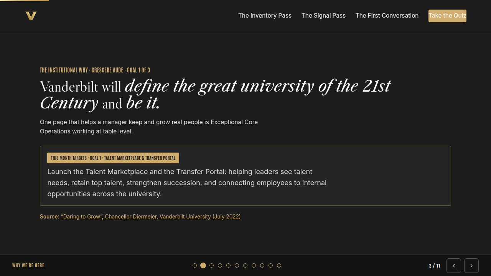
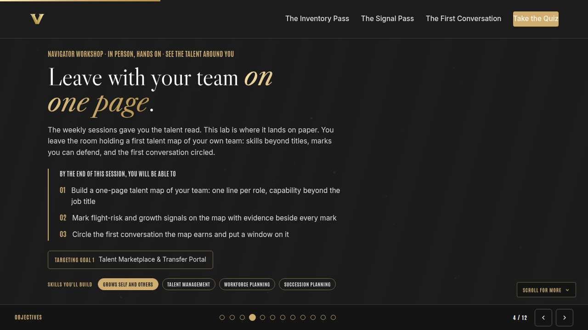
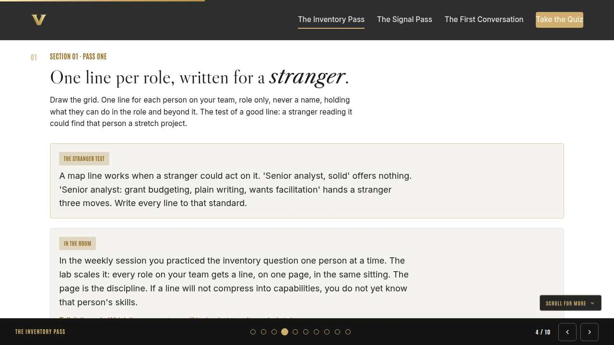
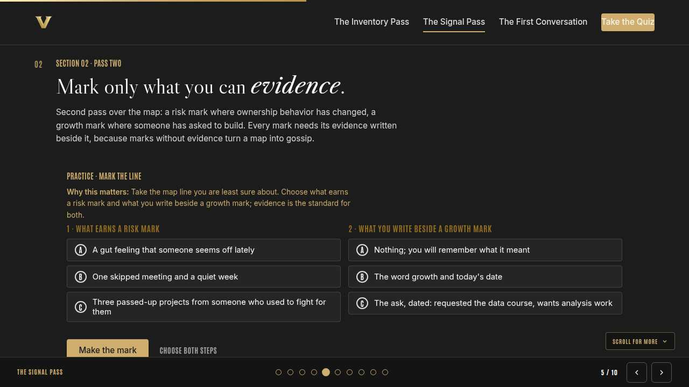
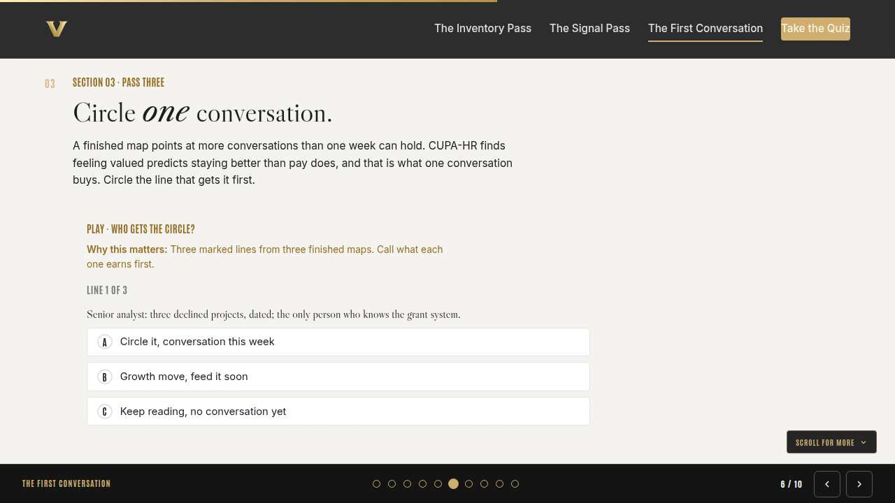
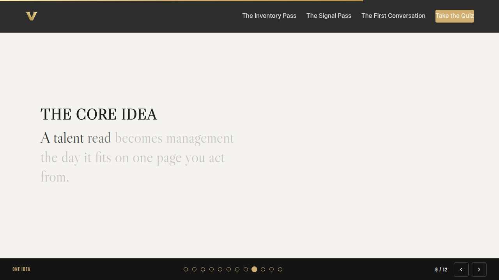
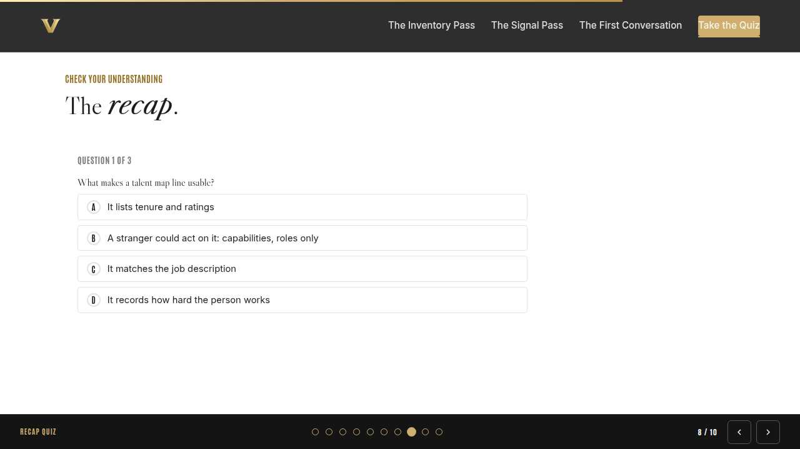
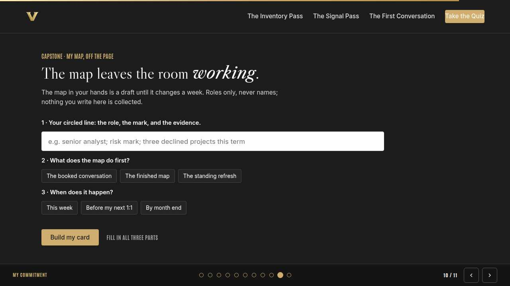
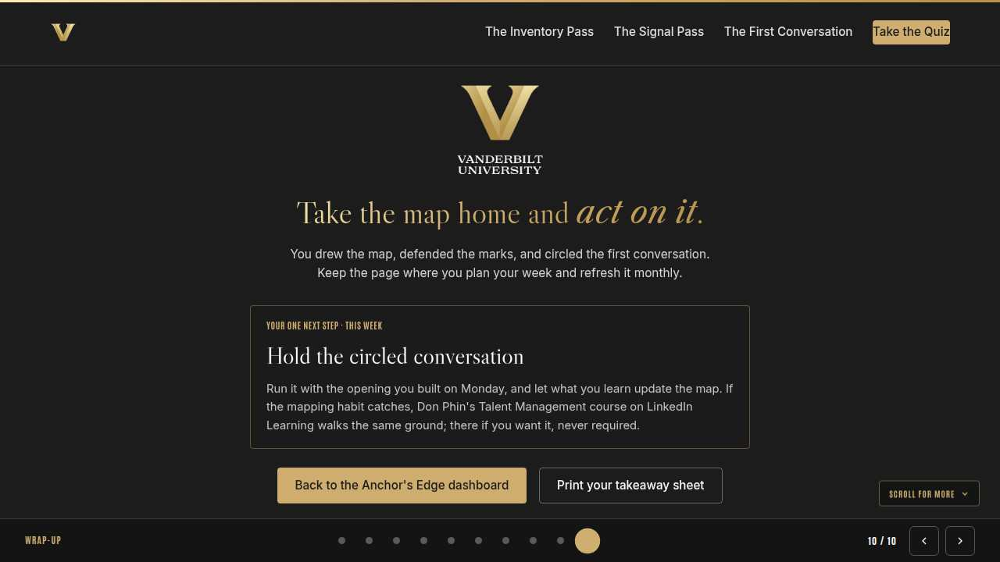

Vanderbilt · Anchor's Edge · ATD facilitator guide · print edition
The Talent Map Lab, the facilitator guide

Run of show
| Screen | Full (min) | Core (min) |
|---|---|---|
| Welcome / QR | 3 | 2 |
| Why we're here | 4 | 2 |
| Objectives | 3 | 2 |
| The inventory pass | 9 | 6 |
| The signal pass | 11 | 8 |
| The first conversation | 9 | 6 |
| The core idea | 2 | 1 |
| Recap quiz | 5 | 4 |
| Capstone commitment | 6 | 3 |
| Closing | 2 | 2 |
| Total | 54 | 36 |
The goal this month serves
Goal 1, Talent Marketplace & Transfer Portal.
Audience
Vanderbilt people managers and team leads, in person with their navigator. Works for 8 to 30 at tables of 4 to 6; every exercise runs on paper or the manager's own device. Best after the month's weekly sessions, and it stands alone for anyone who missed them.
Room setup
In person, navigator led: projector plus presenter device, tables that pair easily, learners on their own devices via the welcome-slide QR. Nothing typed into the deck is saved or sent.
Materials
- Meeting platform with screen share and breakout rooms; deck link ready to paste in chat
- Facilitator machine with the facilitator edition open; notifications off
- Learners on their own devices with the learner link
- Chat open for share-outs; the capstone copy button pastes there cleanly
A week before
- Run the learner edition start to finish and do every interaction honestly; you will demo at least one live.
- Read this month's theme page on the Anchor's Edge dashboard so the goal tie-in is fluent.
- Send the invite with the learner link and one line on what to bring.
The day before
- Test screen share with the facilitator edition; confirm the notes rail is readable.
- Open the learner link on a second device; the QR must land there.
- Run the section interactions once so you can drive them without reading.
30 minutes before
- Welcome slide up as people join; link pasted in chat.
- Close every other tab; silence the machine.
- Breakout rooms pre-configured in pairs.
When things go sideways
If The projector or room screen fails: The lab survives it: everything runs on paper and learner devices. Read the cards aloud from your own screen and keep the passes moving.
If Tables come out uneven or a manager arrives alone: Fold singles into a neighboring table as a third voice for the swaps; a trio challenges evidence even better than a pair.
If Someone names a real colleague while defending a mark: Protect them warmly and immediately: 'Hold that. Roles, never names.' Then restate the norm to the room once, without spotlighting the table.
If A manager finishes the map early and stalls: Give them the second lap: run the stranger test on every line, then draft the opening sentence for their circled conversation.
Tough questions, ready answers
Q: Where should this map live after today? It feels sensitive.
With you, and only you: a notebook or a private file. It is a manager's working note, never a system record, and nothing about it uploads anywhere. The roles-never-names rule is what keeps it safe to keep, even seen mid-scribble.
Q: What if my read is wrong and I mark someone unfairly?
The map judges nobody; it queues conversations. A wrong risk mark costs one warm check-in that turns out to be unneeded, which is the cheapest mistake in management. That is also why every mark carries evidence and a date: wrong reads get corrected on the next refresh.
Q: My team is twelve people. Do I really map everyone?
Yes, and the hard-to-write lines are the point: they show you where your attention has not been. Spread the finishing over the week if the room runs out. A blank line is more honest than a guessed one, and it tells you what to ask at the next 1:1.
Copy-paste templates
Pre-work invite (paste into the calendar invite)
Subject: In person this month: the Know-Your-Team lab, with your navigator. Bring your team's roster in your head and something to write with; we draw your first talent map in the room. Roles, never names, and nothing you write is collected.
7-day pulse (send one week after)
Subject: Is the map working? Three lines, reply whenever: 1) Did the circled conversation happen? 2) What did acting on the map show you that drawing it did not? 3) When is your next map refresh?
After the session
Seven days out, send the pulse: 'Did the circled conversation happen? What did acting on the map show you that drawing it did not? When is your next map refresh?' Count of held first conversations is the month's Level 3 signal.
Welcome / QR Full 3 min · Core 2
Get everyone into the deck on their own device and set the tone: 90 minutes, in person, hands on.
Say
“Welcome to the Navigator Workshop. Scan the code so this session runs on your device too. 90 minutes, one focus: The Know-Your-Team lab: build your first talent map.”
Do
- Slide projected as people arrive; phones up before you speak.
- State the norm once: type into your own device, nothing you enter is saved or sent.
Watch for: People lurking without the deck open. The interactions only land if the deck is on their screen.
Transition: “Before the topic, thirty seconds on why Vanderbilt is asking for this hour.”

Why we're here Full 4 min · Core 2
Anchor the session in the Chancellor's charge and name the goal this month serves, inside one minute.
Say
“One sentence from the Chancellor sits over everything we do: Vanderbilt will define the great university of the 21st Century and be it. One page that helps a manager keep and grow real people is Exceptional Core Operations working at table level. This month serves Goal 1, Talent Marketplace & Transfer Portal.”
Do
- Read the mission line slowly, once; name the goal, once.
- No discussion here; the whole slide is under a minute.
Transition: “Here is what you will be able to do in 90 minutes.”

Objectives Full 3 min · Core 2
Set the contract for the session in about a minute; this slide is also the roadmap.
Say
“By the end of this session you will be able to: build a one-page talent map of your team: one line per role, capability beyond the job title; mark flight-risk and growth signals on the map with evidence beside every mark; circle the first conversation the map earns and put a window on it. We take them in order, and each one has something to practice.”
Do
- Read the three objectives briskly; they double as the agenda.
- Point at the goal chip once, then move.
Transition: “First objective.”

The inventory pass Full 9 min · Core 6
Get every manager's grid drawn: one line per role, capability language, the stranger test as the quality bar.
Say
“This is a working session, so paper up. One line for every person on your team, role only, never a name, and in that line what they can actually do, including the skills the job never asks for. The bar is the stranger test: could someone who has never met your team read the line and find that person a project? We write first and polish after. And if the hour feels expensive, Gallup's strengths research prices it for you. People who get to use what they are best at every day are about six times as likely to be engaged, and measurably less likely to quit. You cannot use strengths you have never written down.”
Do
- Hand out the map sheets, or point tables to the template on their devices; the flip chart carries the two rules: roles never names, capabilities never duties.
- Give the room quiet drawing time; walk the tables and read over shoulders for duty-list lines.
- Show the In the room card and run the discussion prompt from the front; two or three voices.
- Run the table exercise: one line read aloud per manager, table sharpens it against the stranger test.
Ask
“Which line on your team was hardest to write?”
Expect:
- The newest hire, still unknown
- The quiet steady performer
- Often their strongest person: familiarity hides specifics
Respond: Name the pattern: hard-to-write lines mark where your attention has not been. That is a finding, and those people get your next 1:1 questions.
Debrief: Every blank or vague line is a person whose talent the university cannot yet use. The map shows you exactly where to look next.
Watch for: Managers writing names or duty lists. Walk the room and catch both early: roles only, capabilities only.
Transition: “The lines say what people can do. The second pass says what is moving.”
Core path: Core: cut the read-alouds; each table sharpens one line together instead of one per manager.

The signal pass Full 11 min · Core 8
Add risk and growth marks with written evidence, and calibrate the evidence bar through a table swap.
Say
“Second pass. Go back over your lines and mark two things: risk, where ownership behavior has changed against that person's own baseline, and growth, where someone has asked to build something. The discipline that makes the map trustworthy is small. Every mark gets its evidence written beside it, with a date. A mark you cannot evidence is a mood, and moods do not belong on a document you will act from.”
Do
- Run Mark the line from the front; managers choose on their own devices, then mark their real maps.
- Walk the room during marking; quietly ask for the evidence behind any mark you see land fast.
- Run the table swap: trade one marked line with a neighbor, challenge the evidence, defend or downgrade.
Ask
“What happened when your neighbor challenged your evidence?”
Expect:
- Some marks got downgraded to watching
- Some got stronger under questioning
- A few managers realized the evidence was secondhand
Respond: All three are the exercise working. A mark that survives a colleague's challenge is one you can act on; a mark that folds just saved you from acting on a hunch.
Debrief: Evidence beside every mark is what separates a talent map from a rumor page. Dated patterns, their own baseline, roles only.
Watch for: Tables slipping into naming or story-swapping about real colleagues. Reset warmly: roles and patterns, never names and anecdotes.
Transition: “A marked map wants more than one week can give. The last pass is choosing.”
Core path: Core: skip the table swap; each manager self-challenges their weakest mark instead.

The first conversation Full 9 min · Core 6
Triage the finished map: one circled line, a reason, and a window.
Say
“Your map now points at four or five conversations, and a list of five is how zero happen. So the last pass is one circle. Read your marked lines and ask two questions: where is the evidence strongest, and where is the cost of being wrong highest? Where those two meet, that is your circle. Monday's session built the conversation itself; today decides who it is for and when.”
Do
- Run Who gets the circle? from the front; the room calls each line aloud before you reveal.
- Quiet minute: everyone circles one line on their own map.
- Run the table round: circled line and one-sentence reason, one challenge question per table mate.
Ask
“What made you pick your circle over the runner-up?”
Expect:
- Stronger evidence
- The cost of losing that person
- Sometimes honesty: the runner-up talk feels harder
Respond: If the real answer is that the other talk feels harder, say so out loud at the table. The uncomfortable circle is usually the right one, and the room is where to admit it.
Debrief: Evidence times cost picks the circle. One booked conversation beats five intended ones.
Watch for: Managers circling the easiest conversation instead of the most needed one. The table challenge question exists to surface this; let peers do the pushing.
Transition: “Cards next: the map's first move goes on paper before the map leaves the room.”
Core path: Core: cut the table round to one volunteer per table sharing the circle and reason.

The core idea Full 2 min · Core 1
Land the one sentence the session exists to install.
Say
“If you keep one sentence from today, this is it. Read it once, out loud: Put evidence beside every mark, and act on the one line you circle.”
Do
- Pause two beats after reading; the word animation carries it.
Transition: “The recap makes it stick.”
Core path: Core: pass through in stride; the sentence reads itself.

Recap quiz Full 5 min · Core 4
Score the learning while it is fresh; wrong answers are teaching moments, not failures.
Say
“Three questions, on your own screen. Answer honestly; the explanations are where the learning sticks.”
Do
- Give the room 90 seconds to run it individually.
- Ask for a show of results in chat: how many got 3 of 3?
- Read out the explanation for whichever question drew the most misses.
Watch for: Rushing past the why lines. The explanations carry the teaching.
Transition: “Now point it at your real week.”

Capstone commitment Full 6 min · Core 3
Convert the session into one named, dated action per person.
Say
“Last build. Your circled line goes on the card: role, mark, evidence, and the first move the map makes this week. Copy it onto your phone or fold it into your bag, and book the conversation before you leave the building if you can. Quiet couple of minutes, then a few read-alouds.”
Do
- Two quiet minutes; everyone builds their own card.
- Invite two or three volunteers to read their card aloud or paste it in chat.
- Remind: copy the card somewhere you will see it this week.
Watch for: Vague entries. Nudge for a name-able situation and a real date.
Transition: “Last slide.”

Closing Full 2 min · Core 2
End with the next step and where this thread continues.
Say
“You walked in with a read and you are walking out with a map. This is what the month's weekly sessions were building toward: Monday gave you the talent read and the conversation, Tuesday put your own skills on the Talent Marketplace, and Thursday gave you the questions that surface what the map needs. Keep the page and refresh it monthly. And if the mapping habit caught, Don Phin's Talent Management course on LinkedIn Learning goes further whenever you want it. Never homework, always there.”
Do
- Point at the next-step card; one sentence.
- Name the rest of the week's rhythm: the other sessions echo this month's theme.
Generated from facilitator/notes.json. The on-screen facilitator edition lives at ./ alongside this guide.